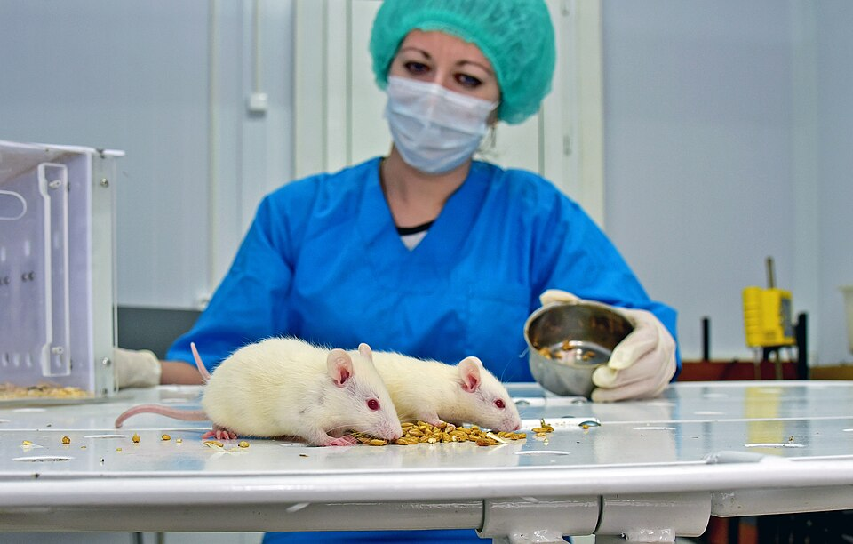

CH 15Feminist Perspectives on Values in Science
The case the chapter opens on, and what it is doing there
The question: can a treatment be studied for sixty years and still get the basic facts wrong, with nobody breaking any rules?
The answer is yes, and hormone replacement therapy is the case. Here it is in order.
From the 1940s, HRT became the standard treatment for the symptoms of menopause: hot flushes, night sweats, broken sleep. Uncontroversial so far.
In 1966 a physician named Robert Wilson published a bestseller called Feminine Forever, and prescriptions jumped. His claim was larger than symptom relief. HRT would reverse or prevent menopause and preserve femininity: more sexual drive, less vaginal dryness, and skin that did not age or droop.
By the 1980s and 1990s the claims had grown again. HRT was being described as safe, effective, and protective against cardiovascular disease, osteoporosis and some cancers.
In 2002 one of the largest randomised trials ever run reported. The Women's Health Initiative found that HRT, in some forms and in some women, raised the risk of breast cancer, heart disease, stroke and clots.
And the sentence that makes it a philosophy case. Some argued the result should have surprised nobody, because there had been warnings for decades that the evidence for the benefits was thin and that evidence of risk existed.
So where exactly did the value judgments get in? Intemann names three, and they are three different kinds.
- What counts as a benefit. Treating skin that ages or droops as a health benefit is a value judgment, and one shaped by a norm about what a woman is for.
- What counts as an acceptable risk. Saying the benefits outweigh the risks is not arithmetic. It depends on how good you think the benefits are and how bad the outcomes would be, and both are judgments.
- How much evidence is enough, and of what kind. Whether observational studies suffice, or whether you require a randomised trial, is a decision somebody made long before the 2002 trial existed.
Nobody in this story is a villain, which is the point. The chapter's claim is that careful people following the rules produced this, so stricter rules are not the fix.
The five places a value gets in
The question: if values are not confined to choosing topics, where else are they?
The answer is five places, and this is the list to be able to produce. Each comes with a case, and the cases are better revision than the headings.
The claim. Science does not chase true beliefs, it chases significant ones, so somebody decides what is significant. Grant agencies say so openly: proposals are judged on social impact as well as merit.
The figure to remember. 90 per cent of biomedical research funding goes to diseases affecting 10 per cent of the world's population. Fixing that needs an explicit value judgment that effort should go where need is greatest. Neutrality is not available: doing nothing is also a choice.
And the framing case, which connects to week 6. Contraceptive research has focused on women. That framing decides that women carry the testing, the taking and the side effects. The researchers need not have thought women should bear more risk, and many wanted to give women control over reproduction. The frame made the judgment anyway. Make it explicit and a different one looks better grounded: that the burden should be shared, or that we need methods that give men equal responsibility.
The claim. Observation is theory-laden, which is week 3, and the background assumptions doing the loading can be social ones.
Emily Martin on the textbook sperm and egg. Standard accounts had the egg passively floating down the fallopian tube and being penetrated by a sperm that actively burrows in. The biology is a complex chemical interaction between the two surfaces, so the metaphor was obscuring the mechanism.
And the part that makes it more than a historical curiosity. When the newer, correct account arrived, the language stayed gendered. The egg became a femme fatale that ensnares the sperm with its sticky surface. Correcting the biology did not correct the metaphor, which tells you the metaphor was not resting on the biology.
What archaeologists counted as a tool. Research on the evolution of tool use focused on tools for hunting and killing, which are the ones associated with men. Baskets and reeds for foraging were not counted as tools. They were not rejected as data, they were not seen as data. Feminist archaeologists asking what women contributed is what turned baskets into evidence, which is values opening a line of evidence, where every other case here has them closing one.
The claim. Some things science studies are value-laden all the way down, and no amount of care removes it.
Harm to children of divorce, which is Anderson's case from week 5's chapter 2. Harm was measured as economic and psychological damage from not having two parents in one house. But harm could include what happens to a child whose mother stays in an abusive marriage, or stays because she cannot afford to leave. Deciding what counts as harm decides what the study finds.
Home birth, and this one is worth the detail. Studies showing hospital birth is safer measure infant and maternal mortality, which for low-risk women in the United States is extremely low either way. People who choose home birth are usually weighing different risks: hospital births have much higher rates of caesarean section, episiotomy, fetal monitoring and infection. Those are less grave and far more likely. Many studies of the safety of home birth never measured them. So the study has made a judgment about which bad outcomes count as safety, and called the result a measurement.

The claim. A model represents some features and drops others, so building one is deciding what matters.
Male-only animal models. Rodent studies of drug effects use males nearly exclusively, despite evidence that drug metabolism differs by sex. And it holds even for conditions commoner in women: depression and anxiety disorders, stroke, thyroid disease, cardiovascular disease.
The reason given, and the two replies. The reason is that the female oestrous cycle adds a confounding variable that makes causes harder to establish. First reply: that assumption is itself doubtful on the evidence. Second reply, which is the philosophical one: choosing males for simplicity and predictive power treats those epistemic gains as worth more than the consequences for female patients, and that trade is a value judgment nobody wrote down. The consequence is diagnostic guidelines and treatments that fit women less well.
And the same shape in climate models. Models measuring the aggregate effect of climate change on food production can report that losses where drought hits are offset by gains in milder regions. True of the total, and it hides the distribution. Just policy needs to know who loses, and an aggregate is built so as not to say.
The claim, and it is the sharpest one in the chapter. Whether a hypothesis is justified is a comparative judgment: it has to beat the alternatives. So anything shaping which alternatives occur to you also shapes how well supported your conclusion is. That is Okruhlik's argument, and it means a conclusion can be unjustified without any single step being wrong.
The rod and frame test again, now from Longino's angle. Week 6 gave Fausto-Sterling's objection: the test may measure willingness to keep making demands of a man in a dark room. Longino adds why nobody noticed. The researchers were overwhelmingly male and shared values and interests, so the design flaw was invisible from inside the group, and the alternative explanation never came up to be rejected.
And the result that settles it. When the experiment was altered to control for these variables, the difference in performance disappeared.
What replaces the value-free ideal, and the test any replacement has to pass
The question: what has to be true of a replacement for it to satisfy feminists specifically?
The answer is four conditions: a replacement has to do the three political jobs the VFI was doing, and protect the science as well. A replacement has to answer:
- Does it matter who participates in science, and if so why? An epistemic reason, on top of a fair one.
- How can feminist values play a positive role, having only ever been the thing to be scrubbed out?
- How do we make sure the products of science benefit marginalised groups, given how reliably they have reinforced the arrangement?
- And how is the epistemic integrity of science protected once values are admitted?
Model one: value management
The question: can you let all values in and still get objectivity out?
The answer is yes, if the community is built right, and the building instructions are Longino's four norms. Rolin's name for the arrangement is the value-management model.
- There must be recognised avenues for criticism of evidence, methods, assumptions and reasoning.
- There must be shared standards that critics can appeal to.
- The community as a whole must respond to criticism.
- Intellectual authority must be shared equally among qualified practitioners.
The mechanism, in one line: you cannot see your own assumptions, and you can see somebody else's easily. So a community holding different values will catch what each member cannot.
It passes all four tests, which is why it is the mainstream answer. Diversity gets an epistemic job, so question one is answered. Feminist values can be the better-grounded ones in a given case, so question two is answered: if interventions ought to work as well for women as men, that is a reason against male-only animal models; if gathering is work, baskets are tools. Including people whose interests were absent changes what gets studied, so question three is answered. And shared standards plus live criticism protect integrity, so question four is answered.
Then the objection Intemann raises against her own preferred field. The model assumes a level field, and treats science as a place where any value may enter and be judged on equal terms. She lists what is wrong with that picture:
- Research is increasingly privately funded, and funders decide what gets pursued, which methods regulators require, and what gets published. Pharmaceutical trials often retain the right to withhold negative results.
- Manufactured dissent, which is week 5's Merchants of Doubt arriving from the other direction: privately funded scientists raise objections in order to stall policy, confuse the public and divert other scientists' time.
- Who gets to participate at all is unequal before anybody reaches a laboratory. A third of United States schools are rural and a fifth of students attend one, and rural schools get less funding, less fast internet, and have more trouble keeping qualified science teachers.
- And the culture inside the field excludes without any explicit discrimination: work demands incompatible with parenting, harassment, and a climate that makes staying undesirable even where nobody discounts your work.
So the objection is not that the four norms are wrong. It is that a model which depends on equal intellectual authority cannot deliver it in a world arranged like this one.
Model two: social justice
The question: what do you add once you accept the field is not level?
The answer is an aim. The social justice model starts from a commitment: a central purpose of publicly funded science is to achieve social justice, meaning science should benefit everyone and particularly those who are worst off. Intemann presents it as an addition to the first model, and never a rival to it.
What makes it different in one line: the management model is pluralist, letting all values compete. The social justice model prioritises some values over others before the competition starts.
The method attached to it has a name you should keep. Studying up, or studying from the margins out. In practice that means working with members of the affected group to frame the problem, identifying everyone affected, asking whether the usual concepts serve all of them, investigating how the problem shows up differently for different groups, and asking how systems of power contribute to it.
Why it answers question one better. People in marginalised positions are likelier to have evidence about how arrangements disadvantage them, and the line Intemann uses is the memorable one: privilege is easier to identify by those who do not have it.
And she does not pretend it is finished. Three questions she poses and leaves open: are there competing conceptions of justice, and what if they conflict? Should all research aim at it, or can research be worth doing without advancing it? And how is it applied to a concrete decision?
- It completes week 6. Chapter 4 showed values enter at nine decision points. This asks which values should, and who decides.
- It answers week 5's relativism objection in its strongest form: both models keep shared standards of evidence, so neither is the free-for-all the objection imagines.
- It is answered by chapter 19 below, which says both models are academics arguing about academics.
- It sets up weeks 8 and 9. Tremain on disability is the social justice model applied to a group, and the normalization material is how a category gets built in the first place.
The book that drove the HRT boom was paid for by the company selling it
Feminine Forever sold around 100,000 copies in its first year and was serialised in women's magazines. Robert Wilson's research foundation was funded by Wyeth, the pharmaceutical company making Premarin, the most widely prescribed form of the drug, along with other manufacturers. His son later said publicly that Wyeth had funded the book itself.
The chapter does not mention this, and it is worth knowing because it cuts both ways. It makes the case look like straightforward corruption, which would let the rest of science off. Intemann's point is the harder one: the value judgments she lists were made by ordinary researchers too, for decades after Wilson, by people with no cheque involved.
The 2002 trial was stopped early, and the fallout is still argued about
The Women's Health Initiative oestrogen-plus-progestin arm was halted about three years ahead of schedule because the monitoring board judged the harms had crossed a pre-set boundary. Prescriptions fell by roughly half within a year, worldwide.
Since then the picture has become more complicated in the direction the chapter describes: risk and benefit depend on which hormones, what dose, for how long, and how close to menopause the patient started, which matters most of all. Women starting under sixty appear to have a different risk profile from the trial's average participant, who was in her sixties. Which is the chapter's argument once more: an aggregate answer hid a distribution.
Emily Martin’s paper is one of the most reprinted in the field
"The Egg and the Sperm: How Science Has Constructed a Romance Based on Stereotypical Male-Female Roles", Signs, 1991. She went through the textbooks and tabulated the verbs. Sperm deliver, activate, penetrate; eggs are transported, swept, drift.
The biology that displaced it came largely from a Johns Hopkins laboratory finding that the sperm's forward thrust is weak and that it is the chemical interaction at the egg's surface that moves the sperm in. Martin's observation is that the new finding was reported with the egg as an aggressor, which is a different stereotype doing the same job.